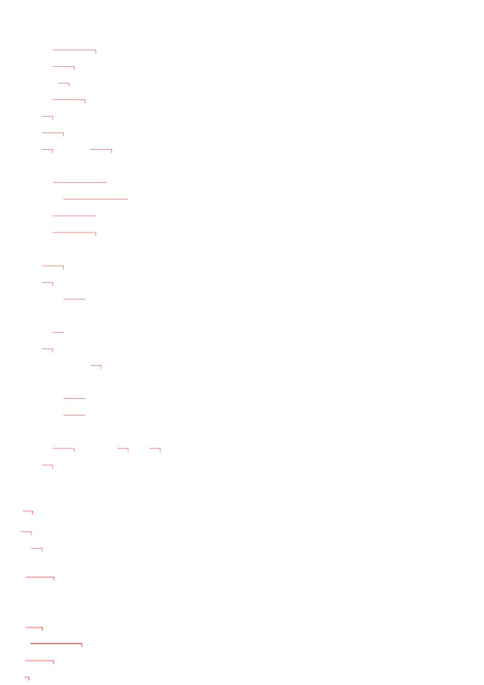
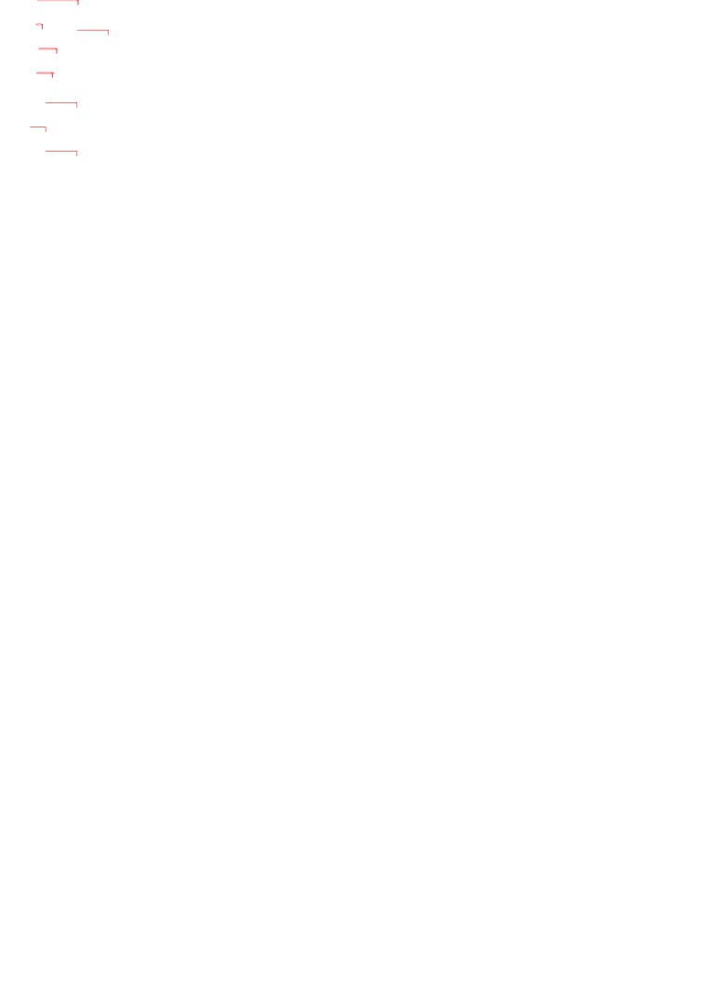
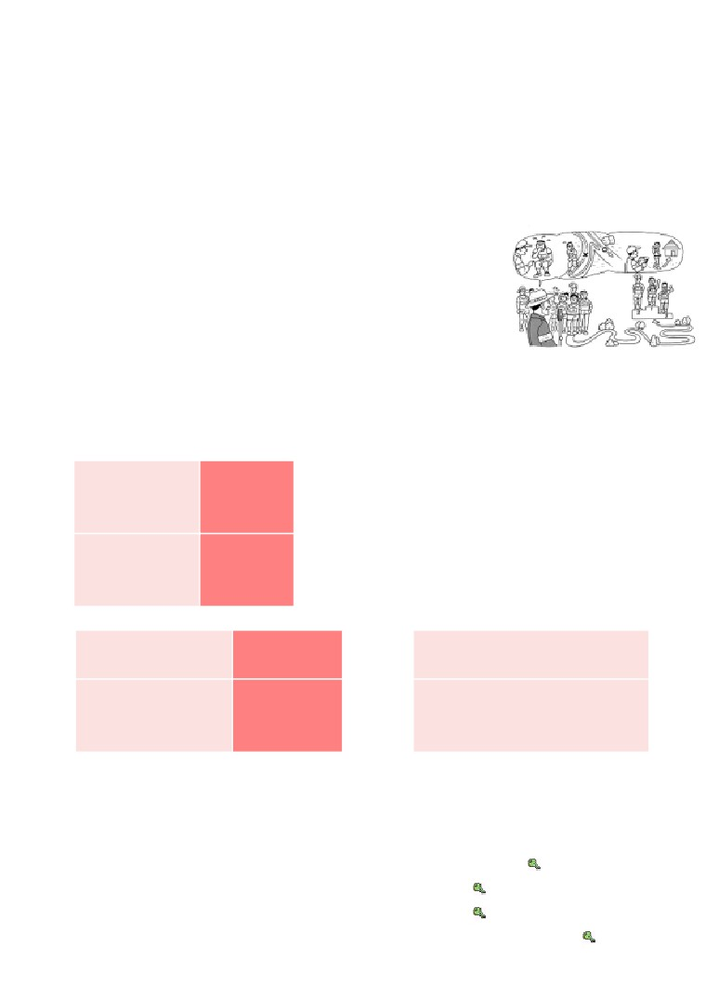
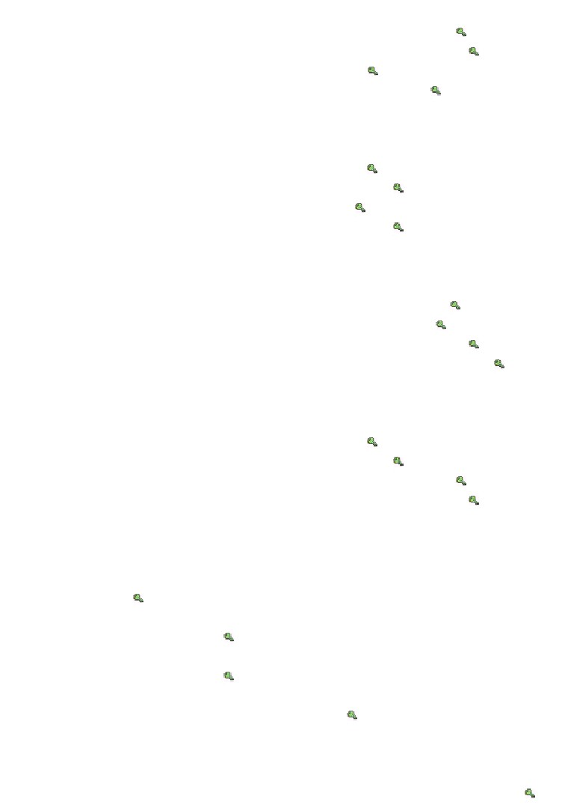
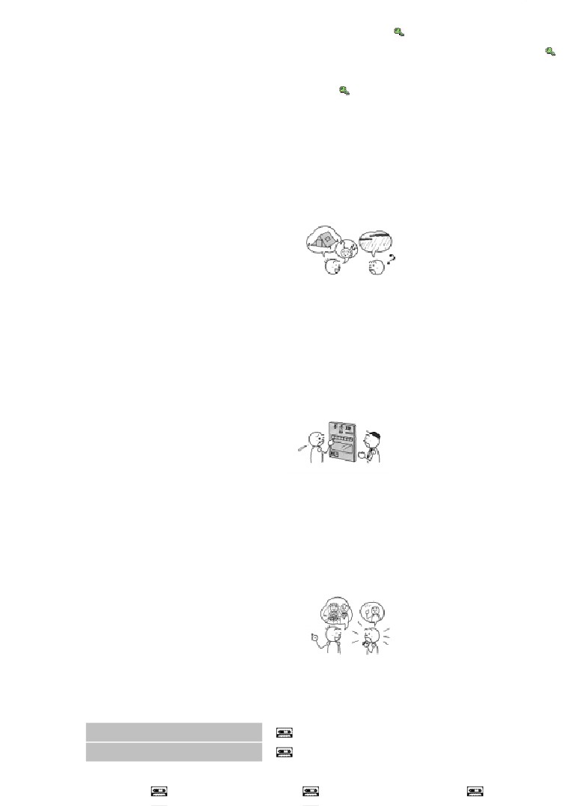
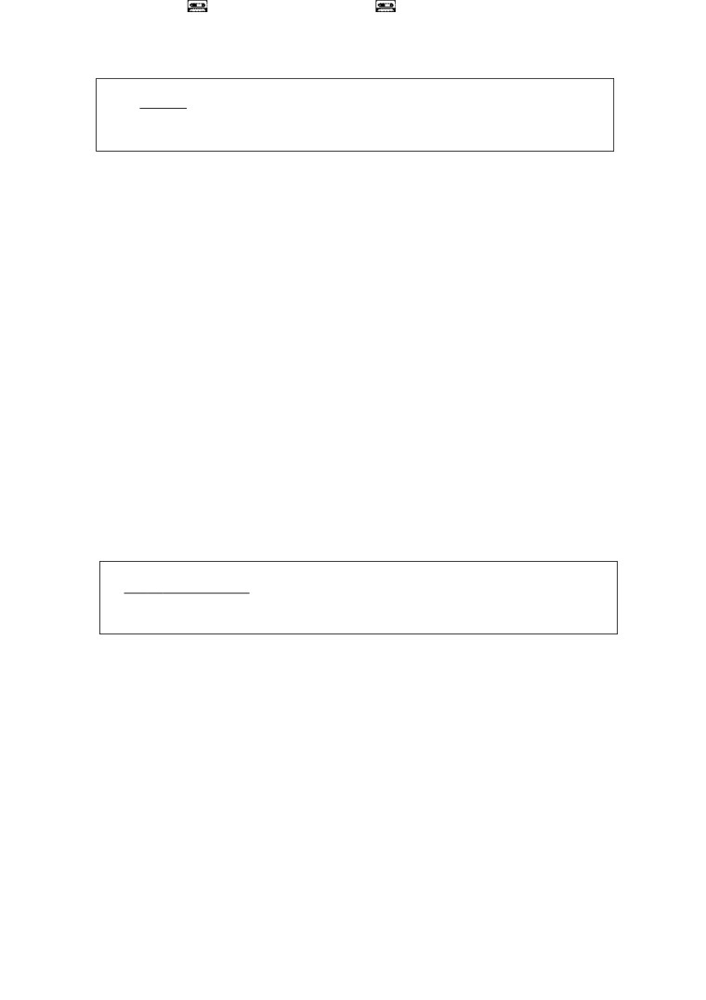
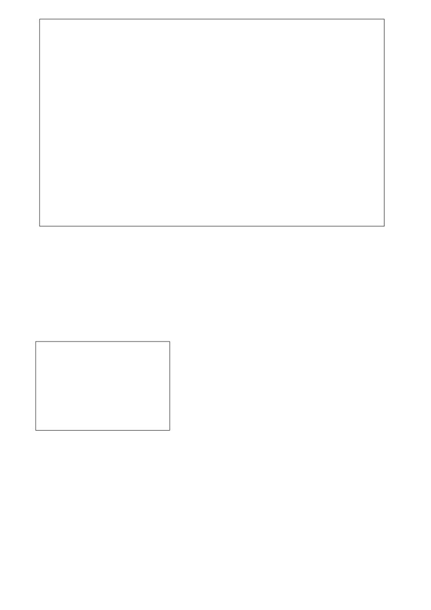
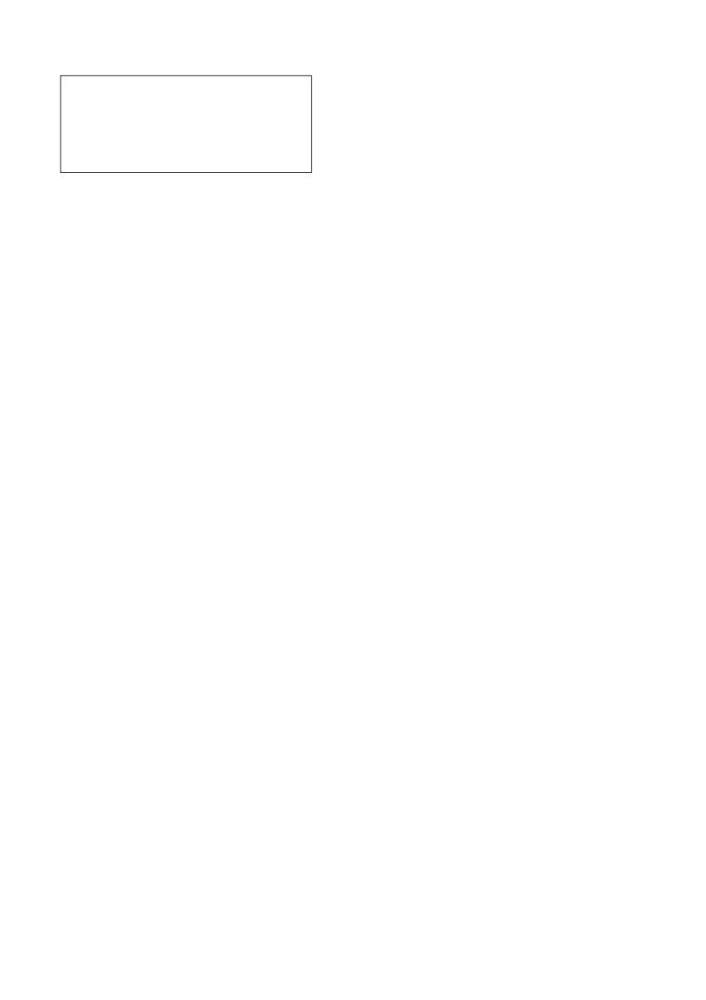

第４５課
課:45 (頁:1/8)
ことば
1. あやまります Ⅰ
謝ります
道歉
2.
あいます
Ⅰ
遇到，遭遇，發生〔車禍〕
［じこに～］
［事故に～］
3. しんじます Ⅱ
信じます
相信，信任
4. よういします Ⅲ
用意します
準備
5. キャンセルします Ⅲ
取消
6. うまく いきます Ⅰ
順利進行
7. ほしょうしょ
保証書
保證書
8. りょうしゅうしょ
領収書
收據
9. おくりもの
贈り物
禮物（～を します：送禮）
10. まちがいでんわ
まちがい電話
打錯的電話
11. キャンプ
露營，帳篷
12. かかり
係
擔任某項工作的人
13. ちゅうし
中止
中止
14. てん
点
點，分
15. レバー
杆，桿
16.［…えん］さつ
［…円］札
〔…日元〕的紙鈔
17. ちゃんと
規規矩矩，準確無誤，確實，完全
18. きゅうに
急に
突然
19. たのしみに して います楽しみに して います 期待著，盼望著
20. いじょうです。
以上です。
到此結束。
かい わ
会話
かかり いん
係員
工作人員
コース
路線
スタート
開始，出發
い
…位
第…名
ゆう しょう
優勝します Ⅲ
獲得冠軍
よ
もの
…読み物………………………………………………………………………
なや
悩み
麻煩，煩惱
め ざ
どけい
目覚まし［時計］
鬧鐘

ねむ
課:45 (頁:2/8)
眠ります Ⅰ
睡覺
め
さ
目が覚めます Ⅱ
醒來
だい がく せい
大学生
大學生
かい とう
回答
回答
な
鳴ります Ⅰ
叫，響
セットします Ⅲ
組成套
それでも
儘管如此，可是
…………………………………………………………………………………
ぶん けい
文型
ば あい
がい しゃ
れん らく
1.
カードを なくした 場合は、すぐ カード会社に 連絡して
ください。
やく そく
かの じょ
き
2.
約束を したのに、彼女は 来ませんでした。
れい ぶん
例文
でん わ
ば あい
なん
い
あやま
1.
まちがい電話を かけた 場合は、何と 言って 謝ったら
いいですか。
ばん ごう
い
…「すみません。 番号を まちがえました。」と 言えば
いいです。
ほ しょう しょ
2.
これが この コンピューターの 保証書です。
ちょう し
わる
ば あい
ばん ごう
れん らく
調子が 悪い 場合は、この 番号に 連絡して ください。
…はい、わかりました。
と しょ かん
りょうしゅうしょ
3.
あのう、この 図書館では コピーの 領収書が もらえますか。
ひつ よう
ば あい
かかり
い
…ええ。 必要な 場合は 係に 言って ください。
か じ
じ しん
ば あい
ぜっ たい
つか
4.
火事や 地震の 場合は、絶対に エレベーターを 使わないで
ください。
…はい、わかりました。
5. スピーチは うまく いきましたか。
いっしょうけん めい
れん しゅう
おぼ
と ちゅう
わす
…いいえ。 一生懸命 練習して 覚えたのに、途中で 忘れて
しまいました。
あめ
6. 雨なのに、ゴルフですか。
へ た
す
…ええ。 下手だけど、好きなんです。
かい わ
会話
いっしょう けん めい れん しゅう
一生懸命 練習したのに

かかりいん
みな
けん こう
む り
課:45 (頁:3/8)
係員 ：
皆さん、この マラソンは 健康マラソンですから、無理を
しないで ください。
き ぶん
わる
かかり いん
い
もし 気分が 悪く なったら、係員に 言って ください。
さん か しゃ
参加者：
はい。
かかりいん
ば あい
もと
ところ
もど
つづ
係員 ：
コースを まちがえた 場合は、元の 所に 戻って 続けて
ください。
さん か しゃ
と ちゅう
ば あい
参加者：
あのう、途中で やめたい 場合は、どう したら
いいですか。
かかりいん
ば あい
ちか
かかりいん
な まえ
い
かえ
係員 ：
その 場合は、 近くの 係員に 名前を 言ってから、帰って
じ かん
ください。 では、スタートの 時間です。
-------------------------------
すず き
鈴木 ：
ミラーさん、 マラソンは どうでしたか。
い
ミラー： 2位でした。
すず き
い
鈴木 ：
2位だったんですか。 すごいですね。
いっしょう けん めい
れん しゅう
ゆうしょう
ミラー： いいえ、一生懸命 練習したのに、優勝できなくて、
ざん ねん
残念です。
すず き
らい ねん
鈴木 ：
また 来年が ありますよ。
れんしゅう
練習 Ａ
かい しゃ
ば あい
れん らく
1.
会社に
おくれる
場合は、連絡して ください。
て がみ
手紙が
つかない
こう つう じ こ
交通事故に
あった
つ ごう
都合が
わるい
し りょう
資料が
ひつような
エレベーターが
こしょうの
かね
きっ ぷ
で
2.
お金を
いれた
のに、
切符が 出ません。
ぷん
き
30分も
まって いる
タクシーが 来ません。
ね だん
たか
この レストランは
おいしくない
値段が 高いです。
おっと
りょう り
つく
夫は
料理が
じょうずな
あまり 作って くれません。
はたら
きょうは
にちようびな
働かなければ なりません。
れんしゅう
練習 Ｂ
れい
こう つう じ こ
けい さつ
れん らく
1. 例： 交通事故に あいました・すぐ 警察に 連絡します
こう つう じ こ
ば あい
けい さつ
れん らく
→ 交通事故に あった 場合は、すぐ 警察に 連絡して ください。
か じ
お
ばん
でん わ
1)
火事が 起きました・すぐ 119番に 電話します →
かね
お
こう ばん
い
2)
お金を 落としました・交番へ 行きます →
きっ ぷ
えき いん
い
3)
切符を なくしました・駅員に 言います →
くすり
の
ぜっ たい
くるま
うん てん
4)
かぜの 薬を 飲みました・絶対に 車を 運転しません →
れい
かい しゃ
やす
2.
例： 会社を 休みます・どう しますか

かい しゃ
やす
ば あい
課:45 (頁:4/8)
→ 会社を 休む 場合は、どう したら いいですか。
よ やく
れん らく
1)
予約を キャンセルします・いつまでに 連絡しますか →
おんな
ひと
おく もの
もの
2)
女の 人に 贈り物を します・どんな 物に しますか →
3)
はんこが ありません・どう しますか →
そう たい
い
4)
早退しなければ なりません・だれに 言いますか →
れい
か じ
ひ じょう ぐち
に
3.
例： 火事です・非常口から 逃げます
か じ
ば あい
ひ じょう ぐち
に
→ 火事の 場合は、非常口から 逃げて ください。
ねつ
たか
くすり
の
1)
熱が 高いです・この 薬を 飲みます →
りょうしゅうしょ
ひつ よう
みせ
ひと
い
2)
領収書が 必要です・店の 人に 言います →
みず
ひ
3)
やけどです・すぐ 水で 冷やします →
からだ
ちょう し
わる
む り
4)
体の
調子が 悪いです・無理を しません →
れい
かね
い
きっ ぷ
で
4.
例： お金を 入れました・切符が 出ません
かね
い
きっ ぷ
で
→ お金を 入れたのに、切符が 出ません。
じ かん
ま
き
1)
2時間も 待ちました・ミラーさんは 来ませんでした →
そく たつ
て がみ
だ
みっか
2)
速達で 手紙を 出しました・3日も かかりました →
いっしょう けん めい
れん しゅう
うん どう かい
ちゅう し
3)
一生懸命 練習しました・運動会は 中止に なりました →
た なか
ふと
4)
田中さんは 太って いません・ダイエットを して います →
れい
がつ
さむ
5.
例： もう 4月に なりました・まだ 寒いです
がつ
さむ
→ もう 4月に なったのに、まだ 寒いです。
し ごと
いそが
きゅうりょう
やす
1)
仕事は 忙しいです・給料は 安いです →
やす
し ごと
2)
休みです・仕事を しなければ なりません →
ひつ よう
も
い
わす
3)
はんこが 必要でした・持って 行くのを 忘れました →
きたな
せま
や ちん
たか
4)
この アパートは 汚くて、狭いです・家賃は 高いです →
れい
い
うご
6. 例： どう したんですか。（ スイッチを 入れました・パソコンが 動きません ）
い
うご
→ スイッチを 入れたのに、パソコンが 動かないんです。
お
で
1)
どう したんですか。（ ボタンを 押しました・ジュースが 出ません ）
→
からだ
ちょう し
くすり
の
2)
体の 調子は どうですか。（ ちゃんと 薬を 飲んで います・よく
なりません ） →
あたら
くるま
ね だん
たか
3)
新しい
車は どうですか。（ 値段は 高かったです・よく
こ しょう
故障します ） →
いそ
じ
かい ぎ
4)
どうして そんなに 急いで いるんですか。（ 9時から 会議です・
じゅん び
まだ 準備が できて いません ） →
れい
しゃ いん りょ こう
たの
7. 例： ことしも 社員旅行が ありましたか。（ 楽しみに して いました ）
たの
→ いいえ、楽しみに して いたのに、ありませんでした。
じ
しん かん せん
ま
あ
はし
い
1)
3時の 新幹線に 間に 合いましたか。（ 走って 行きました ） →

き
課:45 (頁:5/8)
2)
グプタさんは パーティーに 来ましたか。
りょう り
よう い
（ インド料理を 用意して おきました ） →
し けん
てん
まい ばん
おそ
べんきょう
3)
試験の 点は よかったですか。（ 毎晩 遅くまで 勉強しました ） →
か
4)
コンサートの チケットは 買えましたか。
じ
なら
（ けさ 5時から 並びました ） →
れん しゅう
練習 Ｃ
よ てい
い じょう
なに
しつ もん
1. Ａ: キャンプの 予定は 以上です。 何か 質問が ありますか。
あめ
ふ
ば あい
Ｂ: 雨が 降った 場合は、どう したら いいですか。
ば あい
かかり
でん わ
き
Ａ: その 場合は 係に 電話で 聞いて ください。
Ｂ: はい。 わかりました。
しゅっぱつ
じ かん
ま
1) 出発の 時間に 間に
あ
合いません
し
知らせます
きゅう
い
2) 急に 行けなく なりました
れん らく
連絡します
2. Ａ: すみません。
なん
Ｂ: はい、何ですか。
お
きっ ぷ
で
Ａ: ボタンを 押したのに、切符が 出ないんですが……。
ま
しら
Ｂ: ちょっと 待って ください。 調べますから。
せん えん さつ
い
1) 千円札を 入れました
つ
で
お釣りが 出ません
まわ
2)
この レバーを 回しました
かね
もど
お金が 戻りません
ひと
こん ど
けっ こん
3. Ａ: あの 人、今度 結婚するんですよ。
しん
Ｂ: えっ、信じられませんね。
どく しん
い
あんなに 独身の ほうが いいと 言って いたのに、……。
Ａ: そうですか。
かい がい りょ こう
い
1) 海外旅行に 行きます
ひ こう き
きら
飛行機が 嫌いです
しょう がっ こう
せん せい
2)
小学校の 先生に なります
こ
す
子どもは 好きじゃ
ありません
もん だい
問題
れい
ばん
でん わ
1.
1)
…例： 119番に電話します。
れい
れん らく
2)
…例： はい、連絡します。
2.
1)
( × )
2)
( 〇 )
3)
( × )

課:45 (頁:6/8)
4)
( 〇 )
5)
( × )
れい
よ てい
か
か
ば あい
れん らく
3.
例： 予定が （ 変わりました→ 変わった ） 場合は、（ 連絡して ） ください。
れん らく
かね
かえ
けい さつ
きょ か
連絡します お金を 返します 警察の 許可を もらいます
かかり
もう
こ
ちょうせつ
係に 申し込みます
この ボタンで 調節します
くるま
と
と
ば あい
けい さつ
きょ か
1)
ここに 車を （ 止めます→ 止める ） 場合は、（ 警察の許可をもらわ ）なけ
なりません。
じ
うす
うす
ば あい
ちょうせつ
2)
コピーの 字が （ 薄いです→ 薄い ） 場合は、（ このボタンで調節して ） く
ちゅう し
ちゅう し
ば あい
かね かえ
3)
コンサートが （ 中止です→ 中止の ） 場合は、（ お金を返して ） もらえます
べん とう
ひつ よう
ひつ よう
ば あい
かかり もう
こ
4)
お弁当が （ 必要です→ 必要な ） 場合は、（ 係に申し込んで ） ください。
れい
いっしょう けん めい
れん しゅう
れん しゅう
ま
4.
例： 一生懸命 （ 練習しました→ 練習した ） のに、負けて しまいました。
よ
よ
はは
ざっ し
1)
まだ （ 読んで いません→ 読んでいない ） のに、母が 雑誌を
す
捨てて しまいました。
けっ こん しき
しょう たい
しょう たい
つ ごう
わる
2)
結婚式に （ 招待されました→ 招待された ） のに、都合が 悪くて、
い
行けませんでした。
がつ
がつ
あたた
3)
もうすぐ （ 4月です→ 4月な ） のに、なかなか 暖かく なりません。
さむ
さむ
こ
そと
あそ
4)
（ 寒いです→ 寒い ） のに、子どもは 外で 遊んで います。
れい
なお
5.
例： かぜは 治りましたか。
まい にち
くすり
の
なお
…いいえ、毎日 （ 薬を 飲んで いる ）のに、まだ 治りません。
くすり
の
たの
かい ぎ
はじ
薬を 飲んで います 楽しみに して います 会議が始まります
か
ち ず
も
い
たくさん買って おきます 地図を 持って 行きます
き
1)
ミラーさんは 来ましたか。
かい ぎ
はじ
き
…いいえ、もうすぐ （ 会議が始まる ） のに、まだ 来ません。
まつ
い
2)
ことしも お祭りに 行きましたか。
たの
あめ
ちゅう し
…いいえ、（ 楽しみにしていた ） のに、雨で 中止でした。
ぼう ねん かい
の
もの
た
3)
忘年会の 飲み物は 足りましたか。
か
た
…いいえ、（ たくさん買っておいた ） のに、足りませんでした。
えき
い
みち
4)
駅へ 行く 道は すぐ わかりましたか。
ち ず
も
い
…いいえ、（ 地図を持って行った ） のに、なかなか わかりませんでした。
れい
りょう り
つく
ま
かれ
き
6. 例： おいしい 料理を 作って、待って いたのに、（ 彼は 来ませんでした ）。
ねん
えい ご
べんきょう
じょうず
はな
1)
6年も 英語を 勉強したのに、あまり （ 上手に話せません ）。
たか
2)
あの レストランは 高いのに、あまり （ おいしくないです ）。
も
い
しゃ しん
と
3)
カメラを 持って 行ったのに、（ 写真を撮りませんでした ）。
せん たく き
せん しゅう
しゅう り
こ しょう
4)
この 洗濯機は 先週 修理したのに、（ また故障しました ）。

なや
そう だん
課:45 (頁:7/8)
7.
悩みの 相談
そう だん
ぼく
なや
あさ
お
め ざ
ど けい
【相談】 僕の 悩みは 朝 起きられない ことです。目覚まし時計が
みっ
お
よる
はや
ね
3つも あるのに、起きられません。夜は 早く 寝るように して
あさ
お
しん ぱい
ねむ
いますが、朝 起きられるか どうか、心配で、なかなか 眠れません。
となり
へ や
とも だち
まい あさ
きみ
め ざ
め
さ
隣の 部屋の 友達は 「毎朝 君の 目覚ましで 目が 覚める」と
い
ぼく
き
き
と
言って いますが、僕は 気が つきません。気が ついても、止めて、
ね
また 寝て しまうんです。どう したら いいですか。
お がわ
だい がく せい
（ 小川たけし 大学生 ）
かい とう
ね
むずか
ほん
【回答】 まず 寝る まえに、難しくて、おもしろくない 本を
よ
ねむ
みっ
読みましょう。すぐ 眠く なりますよ。それから 3つの
め ざ
どけい
ちが
じ かん
な
目覚まし時計は 違う 時間に 鳴るように、セットして、いろいろな
ところ
お
とけい
な
お
と
所に 置いて おきます。時計が 鳴ると、起きて、止めに
い
め
さ
行かなければ ならないので、目が 覚めますよ。それでも だめな
ば あい
となり
とも だち
お
場合は、隣の 友達に 起こして もらいましょう。
お がわ くん
あさ となり
へ や
とも だち
お
1)
（ × ）小川君は 朝 隣の 部屋の 友達を 起こして あげます。
お がわ くん
よる
ねむ
2)
（ × ）小川君は 夜 すぐ 眠って しまいます。
お がわ くん
め ざ
どけい
な
しん ぱい
3)
（ × ）小川君は 目覚まし時計が 鳴るか どうか、心配です。
こた
ひと
むずか
ほん
よ
ねむ
4)
（ 〇 ）答える 人は 難しくて、おもしろくない 本を 読んだら、眠く
おも
なると 思って います。
文法
１
動詞字典形
動詞
た
形
動詞 ない形 ない
ば あい
場合は、～
い形容詞 （～い）
な形容詞 な
}
名詞
の
「～ばあいは」是預想某種狀況的表達方式。後續的句子則表示應對的方法，
或是成為某種結果。「ばあい」可接在動詞、形容詞、名詞等詞之後，因為「
ばあい」是名詞，所以接續的方法和修飾名詞的接續法一樣。
かい ぎ
ま
あ
ば あい
れん らく
①会議に 間に 合わない 場合は、 連絡して ください。
如果趕不上會議時，請和我連絡。
じ かん
おく
ば あい
かい じょう
はい
②時間に 遅れた 場合は、 会場に 入れません。
如果誤了時間的話，就進不了會場。
ちょう し
わる
ば あい
③ファクスの 調子が 悪い 場合は、どう したら いいですか。
傳真機的狀態不太好時，該怎麼辦呢？
りょうしゅうしょ
ひつ よう
ば あい
かかり
い
④領収書が 必要な 場合は、 係に 言って ください。
需要收據時，請和工作人員說一聲。

か じ
じ しん
ば あい
つか
課:45 (頁:8/8)
⑤火事や 地震の 場合は、エレベーターを 使わないで ください。
遇到火災或地震時，請不要使用電梯。
２
動詞
普通形
}
い形容詞
のに、～
な形容詞 普通形
}
}
名詞
～／→～な
「のに
」可以接在動詞、形容詞、名詞的任何一種之後，接續的方法如上所示。
「のに
」用於從前半部分來看理所當然的情況，但在後半部分卻出現了預料之外
的結果時。
やく そく
かの じょ
き
⑥約束を したのに、 彼女は 来ませんでした。
事先約好了，她卻沒來。
にち よう び
はたら
⑦きょうは 日曜日なのに、 働かなければ なりません。
今天是星期天，卻必須工作。
⑥是說話者期待她既然約好了就會按約定前來，沒來時則有一種被背叛的感覺。
⑦則表示說話者認為星期天可以休息，但仍然要工作，因此有不滿的感覺。就像
這樣，後半部一般都含有意外或不滿的心情。
〔註〕「～のに」和「～が」／「～ても」的區別
へ や
せま
せま
⑧わたしの 部屋は 狭いですが、きれいです。
（×狭いのに）
我的房間雖小，但是很乾淨。
あめ
ふ
で
あめ
ふ
⑨あした 雨が 降っても、 出かけます。
（×雨が 降るのに）
即使明天下雨也要出去。
⑧和⑨的「～が」「～ても」不能用「～のに」替換。⑧只是連接兩個不同的評
價，後半部分不是前半部分預料外的結果，⑨則是在前半部分假定某件事情，而
「～のに
」只能表示既定的事情。
やく そく
こ
やく そく
⑩約束を したのに、どうして 来なかったんですか。（×約束を しましたが）
やく そく
明明約好了，為什麼沒來。
（×約束を しても）
相反地，⑩的「～のに」也不能用「～が」「～ても」替換。因為後半部分是非
常強烈的責難表達方式。